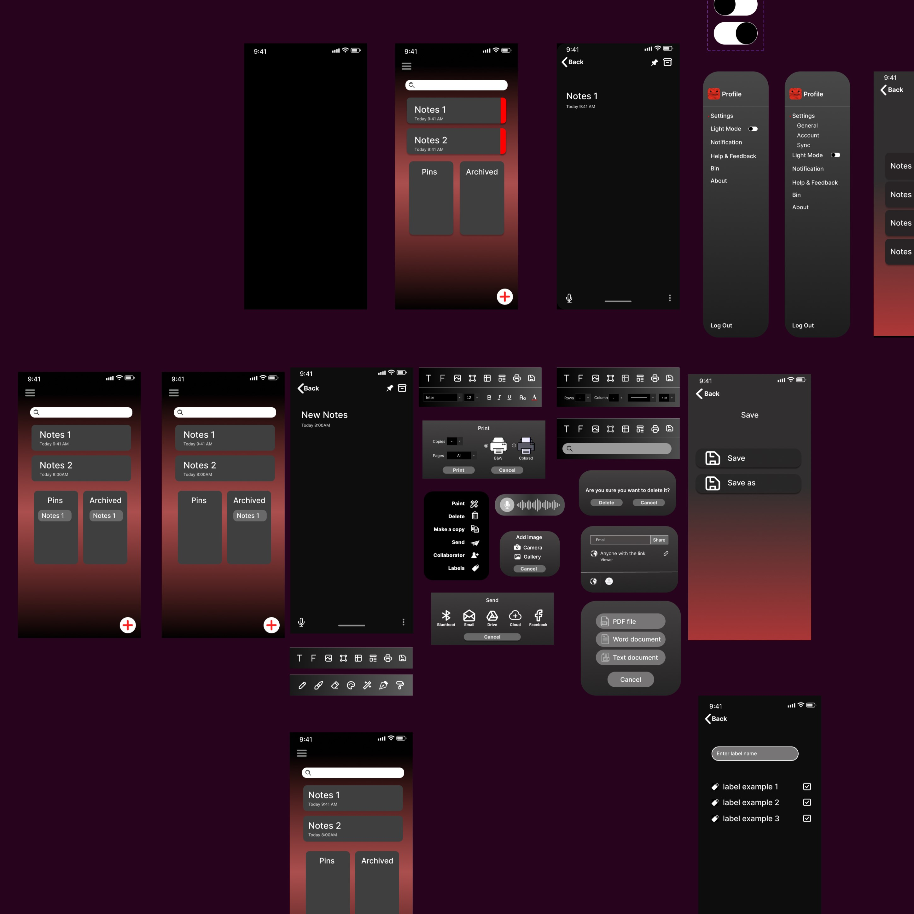
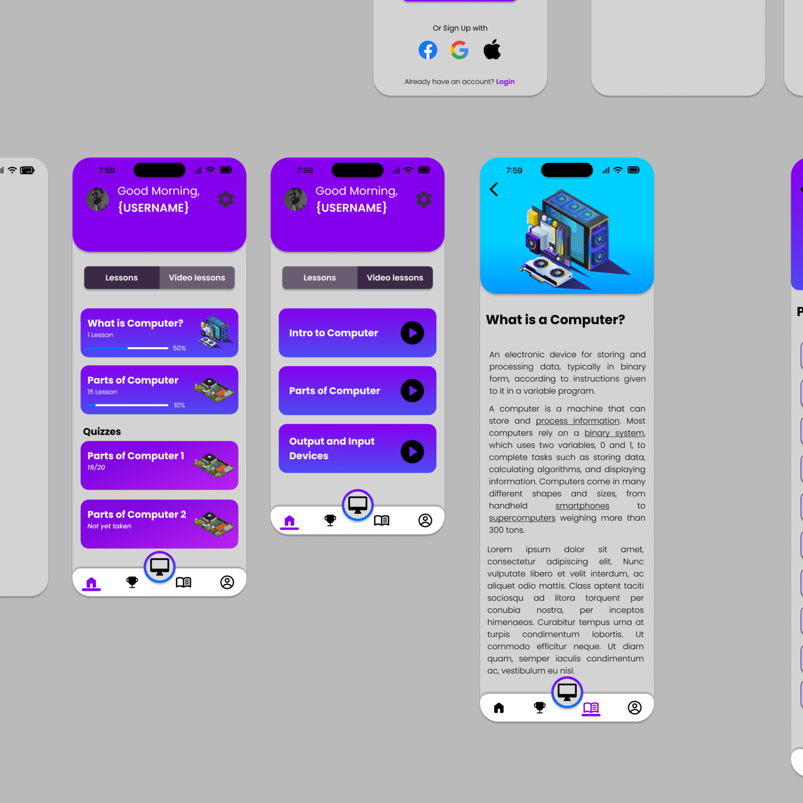

Mockups

Noteflix
Noteflix is your personal haven for organizing ideas, jotting down thoughts, and capturing inspiration on the go. With a sleek and intuitive design, our app seamlessly integrates powerful note-taking features with an elegant user interface, ensuring that your creative process is both efficient and enjoyable.

Project Techzard
With its innovative approach to tech education, Project Techflix revolutionizes the way we learn about computers and technology. Whether you're a curious beginner or a seasoned enthusiast, Techflix empowers you to explore, discover, and master the fascinating world of computer parts and technology.